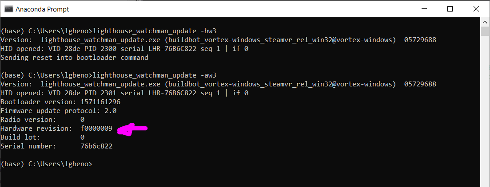

SteamVR Hardware ID (HWID)
Each SteamVR device is identified by its hardware id (HWID). This is a 32bit number that is typically expressed in hexadecimal format.
The hardware ID is broken down into
0x AA BB CC DD
AA - The Vendor Code
| Byte Value | Meaning |
|---|---|
| 0x F0 xx xx xx xx | Tundra Labs Products |
| 0x 90 xx xx xx xx | Generic HDK Designs - Typically supplied by Triad Semiconductor or Synapes |
| 0x 8x xx xx xx xx | HTC Products |
| 0x 1x xx xx xx xx | Valve Products |
| 0x 2x xx xx xx xx | Valve Products |
BB - Major Revision
These are typically specific to the Vendor, the relevant revisions are listed below:
| Byte Value | Meaning |
|---|---|
| 0x 90 03 xx xx | SteamVR HDK and Triad Shoto HDK |
| 0x F0 00 xx xx | Tundra Labs TL448K6D-GP-HDK |
CC - Minor Revision
The minor revision is also set by the vendor, in all current cases this value is set to 00
DD - Sensor Version
The sensor
| Byte Value | Meaning |
|---|---|
| 0x xx xx xx 00 | Gen 1 only: Discrete Optical Sensor (Used in Original Vive) |
| 0x xx xx xx 04 | Gen 1 only: Triad Semiconductor TS3633 (Used in Tracker Developer Edition) |
| 0x xx xx xx 06 | Gen 1 & 2: Triad Semiconductor TS4231 (Used in Vive Pro, Gen 2 Tracker and Pro Controllers) |
| 0x xx xx xx 09 | Gen 1 & 2: Triad Semiconductor TS4631 (Used in Valve Index and Index Controllers) |
Combining Bytes to form a Complete HWID
| Byte Value | Meaning |
|---|---|
| 0x 90 03 00 04 | Original HDK from Triad Semiconductor using TS3633 |
| 0x 90 03 00 06 | Shoto HDK from Triad Semiconductor using TS4231 |
| 0x 90 03 00 09 | Shoto HDK from Triad Semiconductor using TS4112 |
| 0x F0 00 00 09 | TL448K6D-GP-HDK from Tundra Labs using TS4112 |
Reading the Hardware ID from a SteamVR Device
The principle way to read the Hardware ID is when the device is in Bootloader Mode, to put the device into bootloader mode, connect it to a PC via USB and issue the following command:
lighthouse_watchman_update.exe -bw3
The device will disconnect from USB, jump to Bootloader Mode and then re-enumerate. The device will notify the user that it is in Bootloader Mode with a rapidly flashing Red LED.
Once in Bootloader Mode, the Hardware ID can be checked with the following command:
lighthouse_watchman_update.exe -aw3
The following is an example output of this command with the Hardware ID highlighted:

Changing the Hardware ID
If you have determined that the Hardware ID is not correct, you may change it with the following command:
lighthouse_watchman_update.exe -Bw3 0xF0000009
Note the device must be in Bootloader Mode in order to write in a new Hardware ID. Refer to the section above for instructions on how to place the device into bootloader mode.
Note After the Hardware ID is written to a device, it will reboot and exit Bootloader Mode
Why is the Hardware ID Important?
The SteamVR firmware is compiled into a universal binary that supports running on many different hardware targets. The hardware id "tells" the firmware what hardware that it is running on an configures itself for that particular hardware. In some cases, the device will not function with an incorrect hardware ID.
Specific to Optical Sensors, each sensor also has tuned parameters to optimize it's performance in SteamVR. In order to use the correct tuning values, the correct sensor must be identified.
If an incorrect sensor is identified in the hardware id, it may still track but the performance could be erratic and unpredictable.